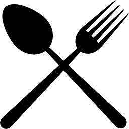

<mat-sidenav-container class="sidenav-container">
  <mat-sidenav #drawer class="sidenav" fixedInViewport
      [attr.role]="(isHandset$ | async) ? 'dialog' : 'navigation'"
      [mode]="(isHandset$ | async) ? 'over' : 'side'"
      [opened]="(isHandset$ | async) === false">
      <div class="logo-container">
        
      </div>
    <mat-nav-list>
      <a class="nav-link" mat-list-item routerLink=""><mat-icon>search</mat-icon> Search</a>
      <a class="nav-link" mat-list-item routerLink="category"><mat-icon>dns</mat-icon> Categories</a>
      <a class="nav-link" mat-list-item routerLink="favourites"><mat-icon>favorite</mat-icon> Favourites</a>
      <a class="nav-link" mat-list-item href="#"><mat-icon>login</mat-icon> Login</a>
      <a class="nav-link" mat-list-item href="#"><mat-icon>logout</mat-icon> Logout</a>
    </mat-nav-list>
  </mat-sidenav>
  <mat-sidenav-content>
    <mat-toolbar color="primary">
      <button
        type="button"
        aria-label="Toggle sidenav"
        mat-icon-button
        (click)="drawer.toggle()"
        *ngIf="isHandset$ | async">
        <mat-icon aria-label="Side nav toggle icon">menu</mat-icon>
      </button>
      <span class="app-title">RecipeBook</span>
    </mat-toolbar>
    <!-- Add Content Here -->
    <div class="app-container">
      <router-outlet></router-outlet>
    </div>
  </mat-sidenav-content>
</mat-sidenav-container>
